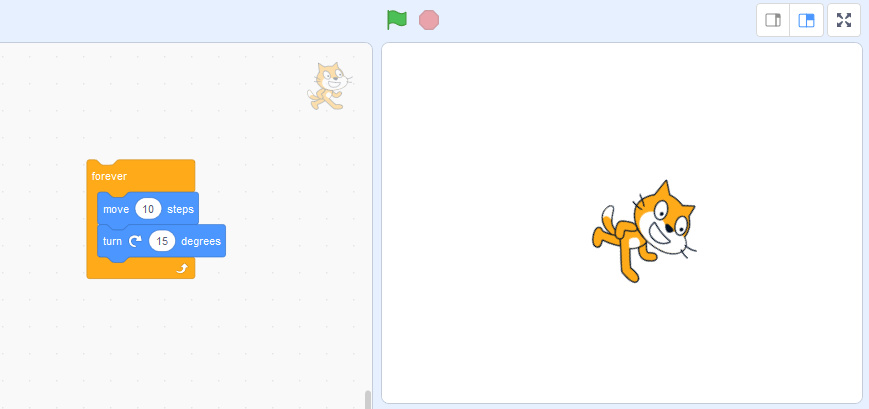
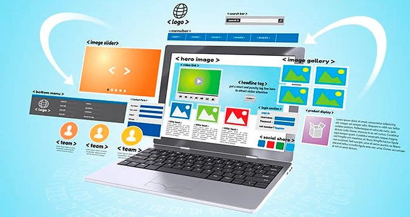
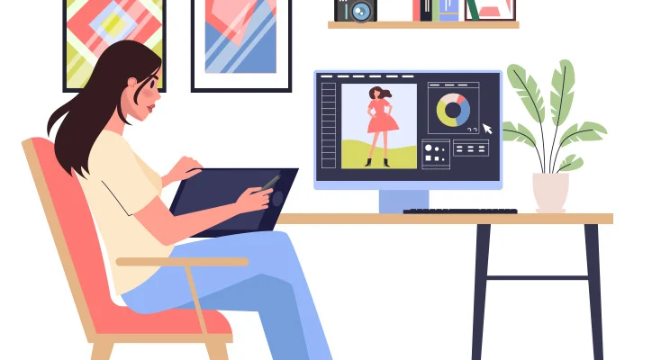

Submódulo 1: Gestión de archivos de texto
Construye documentos electrónicos utilizando las distintas herramientas de inserción y diseño, favoreciendo la comunicación ética y creativa, cubriendo las necesidades de su contexto.Emplea la manipulación de plantillas, la automatización de procedimientos y conversión de documentos en PDF, favoreciendo su creatividad en la comunicación y respetando los derechos de autor, atendiendo diversas necesidades de su contexto.
Submódulo 2: Hoja de cálculo
Emplea la hoja de cálculo con funciones avanzadas, tablas dinámicas y/o macros, para resolver problemas de manera consciente y responsable de su entorno laboral y académico.Plantea soluciones a problemas del entorno personal, académico y laboral mediante la creación de gráficos combinados y de dispersión que le permitan tomar decisiones de manera creativa y reflexiva. Propone soluciones a situaciones de contexto de forma creativa basado en la en equipo mediante tablas dinámicas o macros que automatizan procedimientos en un entorno laboral, personal y académico.
Submódulo 3: Desarrollo y características de documentos electrónicos
Emplea las presentaciones electrónicas para expresarse creativamente. Plantea soluciones a problemas del entorno personal, académico y laboral mediante la creación presentaciones electrónicas que le permita expresar una idea.
Submódulo 4: Comunidades virtuales
Define diferentes tipos de redes y comunidades virtuales, tanto personales, laborales y escolares, para el intercambio de información y archivos multimedia en el ámbito laboral y profesional de manera ética y responsable. Utiliza plataformas con actividades educativas innovadoras, así como comunidades virtuales, del ámbito escolar o profesional que favorezcan su formación continua.

Submódulo 5: Mantenimiento y redes de cómputo
Propone las características del equipo de cómputo que satisfacen las necesidades de diferentes usuarios, empleando diversas configuraciones para un óptimo funcionamiento en el ámbito educativo, laboral y profesional, de forma innovadora y responsable.Utiliza las herramientas del sistema operativo para resolver problemas con los medios de almacenamiento y la operación del sistema, trabajando de manera responsable y colaborativa en un contexto educativo, laboral o profesional. Aplica estrategias de mantenimiento para conservar en óptimo funcionamiento el equipo de cómputo previniendo problemas de operación en los ámbitos organizacionales, educativos y profesionales. Resuelve diferentes problemas de conectividad para compartir información y archivos, empleando periféricos, redes alámbricas e inalámbricas en ambientes laborales, educativos y profesionales con una actitud ética y de servicio.
Submódulo 6: Sistemas de información
Utiliza la metodología para el desarrollo de software, favoreciendo el trabajo colaborativo y creativo en la resolución de problemas de su contexto.Emplea los diferentes modelos de bases de datos, mostrando disposición al trabajo metódico y organizado, para resolver problemas de su contexto.

Submódulo 7: Programación
Plantea el uso de diagramas de flujo y algoritmos, fomentando su desarrollo creativo para solucionar problemas cotidianos de su contexto. Explica los lenguajes de programación y sus metodologías de forma consciente, asertiva y empática, en la resolución de problemas del ámbito académico y laboral. Propone la creación de códigos con instrucciones secuenciales, condicionales y/o repetitivas, asumiendo la frustración como parte del proceso de aprendizaje, en la solución de problemas de su entorno.

Submódulo 8: Programación visual
Crea entornos gráficos mediante el uso de códigos.Utiliza los elementos de programación para resolver un problema.
Submódulo 9: Páginas web
Construye una página web utilizando elementos del software de diseño web, favoreciendo su creatividad e innovación, para comunicar información en distintos contextos.
Submódulo 10: Diseño digital
Ilustra ideas publicitarias y de comunicación a través del diseño de imágenes digitales, utilizando diferentes herramientas de software de diseño, en un ambiente responsable y creativo.Crea animaciones multimedia, favoreciendo un ambiente de tolerancia y creatividad, para expresar ideas que den solución a problemas de su entorno. Aplica el software de diseño editorial para realizar estrategias creativas e innovadoras, en la transmisión de ideas, favoreciendo su creatividad en un ambiente ético y responsable dentro de su contexto.
Submódulo 11: Programación de aplicaciones para equipos móviles
Identifica la diferencia entre una aplicación móvil y un programa de escritorio.Muestra las ventajas de la creación de una aplicación móvil. Elabora una aplicación móvil mediante las herramientas tecnológicas disponibles.